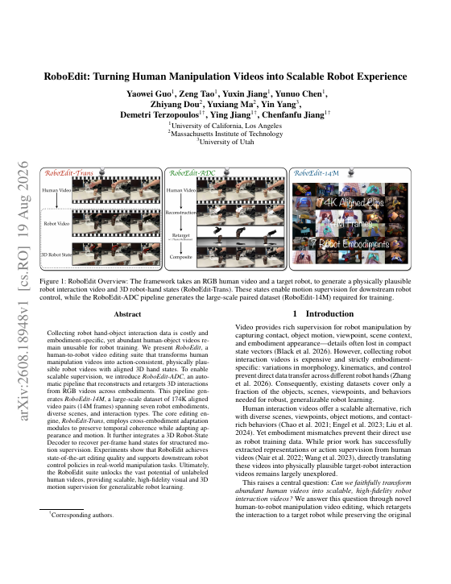

Robot learning · world models · embodied AI
I build world models and vision-language-action systems for generalizable robot intelligence.
I am a Ph.D. student in Computer Science at UCLA, advised by Prof. Chenfanfu Jiang. My research focuses on world models, vision-language-action models, and scalable data pipelines that help robots reason about actions before executing them.
About
Before starting my Ph.D., I was a machine learning researcher at AgiBot, where I led EnerVerse-AC and contributed to AgiBot World Colosseo, Genie Envisioner, and large-scale embodied AI training systems. I also collaborate remotely with Nirvana Robotics on world-model memory and policy generation for manipulation.
I hold a B.Sc. in Mathematics with Statistics for Finance from Imperial College London. My broader interests include video generation, robot manipulation, reinforcement learning, and data engines for embodied agents.
News
- Began my Ph.D. in Computer Science at UCLA.
- MemoryVAM was accepted to CoRL 2026.
- Released two preprints: RoboEdit and SUN.
- MemoryVAM and FetchMan were accepted to RSS 2026 workshops.
- AgiBot World Colosseo was accepted to IEEE Transactions on Robotics.
Selected Publications
* denotes equal contribution.


RoboEdit: Turning Human Manipulation Videos into Scalable Robot Experience
arXiv preprint, 2026

SUN: Persistent Programs for Language-Grounded Control-to-Learning-to-Real Policies
arXiv preprint, 2026


Experience
University of California, Los Angeles
Ph.D. Student, Computer Science. AI & Visual Computing Laboratory.
Nirvana Robotics
Research Collaborator. World-model memory and agentic policy generation for robot manipulation.
UCLA Artificial Intelligence & Visual Computing Laboratory
Visiting Researcher. Generative AI and world models for robotics.
AgiBot AI Research Institute
Machine Learning Researcher. Core contributor to EnerVerse-AC, AgiBot World, and embodied AI training systems.
Ant Group AI Digital Human Institute
ML Engineer and Technical PM Intern. Real-time 3D digital human systems in Unreal Engine 5.
Imperial College London
B.Sc. in Mathematics with Statistics for Finance.
Awards & Service
- Outstanding Paper Award, NeurIPS 2025 Workshop on Embodied World Models for Decision Making.
- Oral presentation, NeurIPS 2025 Workshop on Embodied World Models for Decision Making.
- Best Paper Award Finalist, IROS 2025.
- Reviewer, Conference on Robot Learning (CoRL), 2026.
- Member, IEEE.